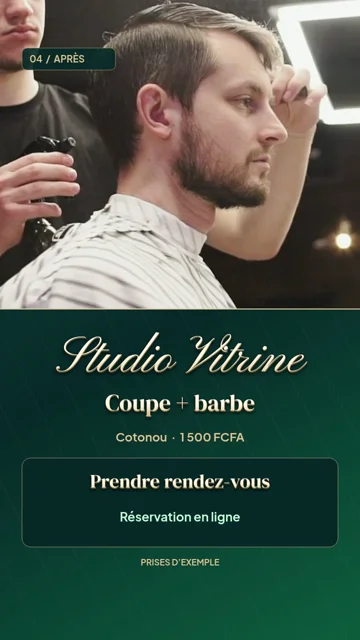

SIGNATURE COIFFURE / FILM FINAL NARRÉ
Studio Vitrine
Coupe + barbe
Cotonou · 1 500 FCFA
Un exemple de progression, du geste aux finitions. Le début ne montre pas un véritable avant coupe. La voix et la musique d’origine sont conservées. Lance la lecture avec le son pour vérifier le montage.
- T1 · coiffure et beauté
- 30 secondes
- Vertical 9:16
- Voix FR
Film de démonstration validé : geste en cours puis finitions. Les images de départ ne montrent pas un avant coupe. Salon et tarif fictifs ; aucune adresse précise ni réservation réelle. Conserver et voir le film historique.
CONTRÔLE IMAGE
Les textes sont dans le film.
Regarde le nom en Pinyon Script ivoire, la prestation en DM Serif Display, puis le geste, le détail, les finitions et l’invitation finale. Ces images sont extraites du MP4, pas ajoutées par le lecteur.



SOURCES IMAGE
Les quatre prises d’exemple.
Ce sont les fichiers utilisés par le moteur. Le montage les recadre et les assemble ; les prises coiffure sont utilisées comme exemple.